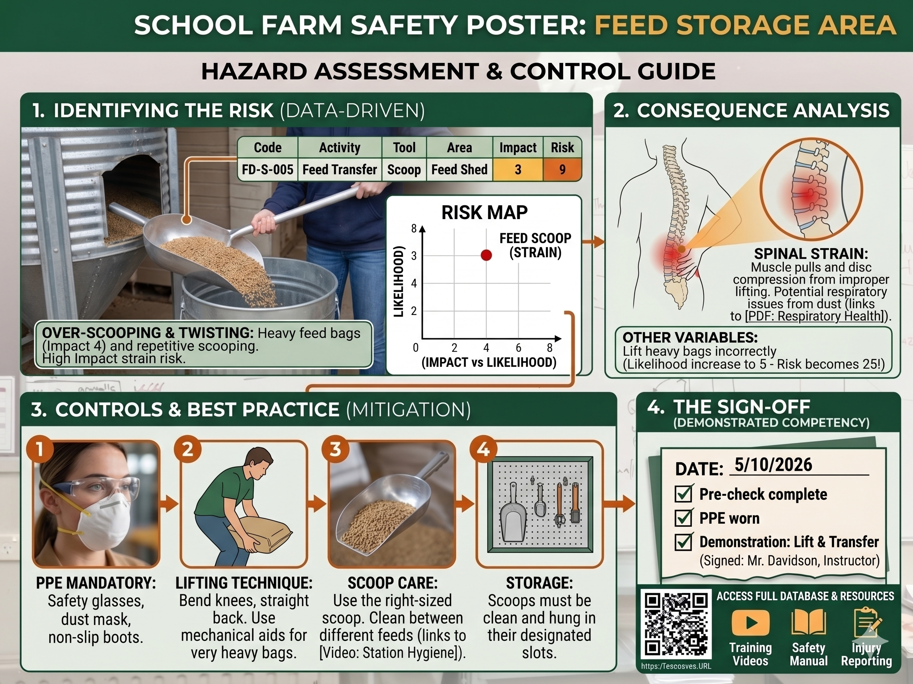
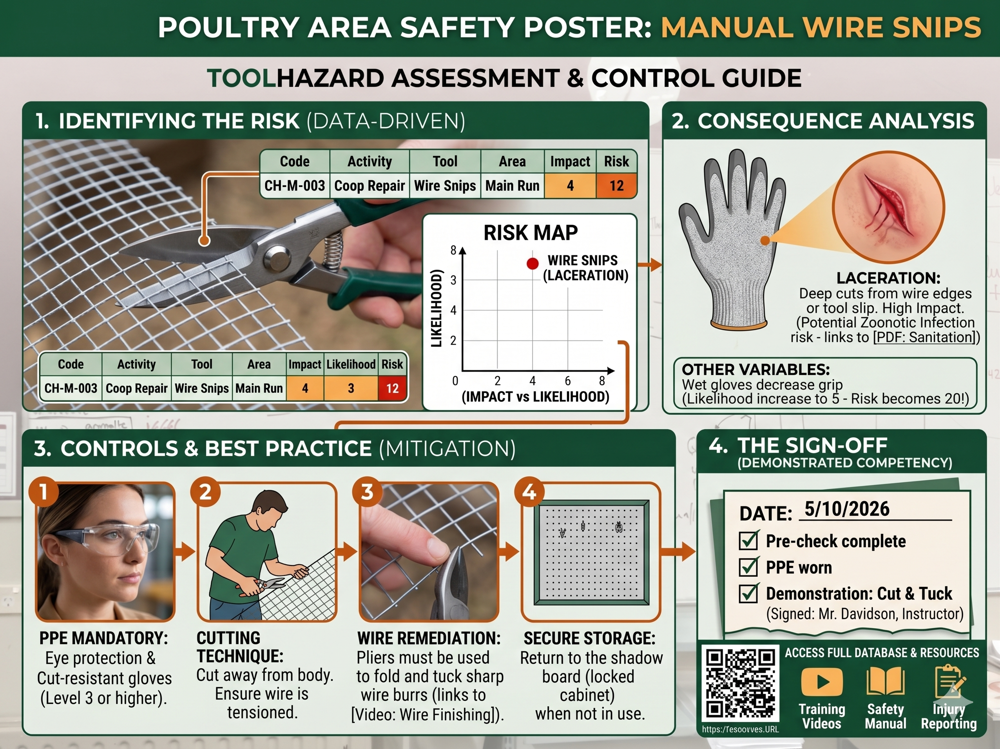

Unit 9: Farm Hazards and Safety Project
Overview
This end-of-term project asks students to complete a full farm hazard audit, build evidence-based controls, and present a final safety poster and briefing.


Big Project Goal
Create a practical, student-led hazard management pack for one school farm area that includes:
- Hazard identification and risk scoring
- Control and mitigation plan
- Safety communication poster
- Team presentation with peer feedback
Learning Outcomes
By the end of this unit, students can:
- Identify hazards in a real farm context using a consistent process.
- Explain risk using likelihood, impact, and risk score.
- Propose controls using elimination, isolation, and minimisation.
- Communicate safety expectations with clear visuals and plain language.
- Reflect on safe practice and team responsibility.
Term 2 Delivery Model (Threaded Across All Lessons)
Hazards and safety are included in every Term 2 lesson as a short routine, with bigger project progress completed on wet days.
Every Lesson (Tue, Thu, Fri)
Use a 5-10 minute safety thread in most lessons:
- Start-of-lesson hazard check for the activity area
- One quick discussion prompt (risk, control, PPE, or safe behavior)
- One monitoring note added to the class hazard log
Wet Day Intensives
Use wet days for deeper hazards project work (30-60 minutes):
- Poster drafting and editing
- Risk matrix scoring and moderation
- Evidence write-up and peer feedback
- Presentation rehearsal and sign-off preparation
Term 2 Week-by-Week Hazards Integration
| Term 2 Week | Tue (light touch) | Thu (light touch) | Fri (light touch) | Wet day intensive focus |
|---|---|---|---|---|
| 1 | Introduce hazard thread routine | PPE refresher linked to activity | Log first monitoring entry | Induction + contract + project briefing |
| 2 | Hazard spotting warm-up | Likelihood vs impact mini-task | Team risk ranking check | Build audit teams and choose focus areas |
| 3 | Safe movement and manual handling cue | Tool-specific hazard reminder | Evidence note and photo plan | Run first full hazard audit draft |
| 4 | Germination/seedling task risk check | Hygiene and contamination control | End-of-week control check | Start poster template with chosen hazard |
| 5 | Animal area dynamic risk check | Safe feed/water handling prompt | Weekly log update | Refine controls and add evidence text |
| 6 | Garden and tool handling reminder | Slips/trips and surface scan | PPE compliance mini-audit | Mid-project peer feedback workshop |
| 7 | Environmental observation hazard cue | Weather-triggered risk discussion | Review near-miss examples | Update risk scores using new evidence |
| 8 | Project fieldwork pre-check | Control hierarchy quick review | Monitoring log quality check | Poster and presentation build session |
| 9 | Data collection safety focus | Communicating risk clearly | Team action check-in | Draft presentation + speaking notes |
| 10 | Practice sign-off checklist | Final control validation | Pre-presentation safety brief | Full rehearsal and peer review |
| 11 | Final hazard summary prompt | Reflection on behavior change | Close-down and next steps | Final presentations and project sign-off |
Suggested Weekly Rhythm
- Tuesday: quick hazard identification and planning cue
- Thursday: controls, PPE, and safe-practice check
- Friday: monitoring log + reflection + actions for next week
Project Workflow
Phase 1: Induction and Setup
- Read project instructions and complete safety induction.
- Sign the student safety contract.
- Review model posters and unit examples.
Phase 2: Field Audit and Evidence
- Choose a farm area or tool focus.
- Record hazards, tasks, tools, and people affected.
- Gather evidence with notes, photos, and observation logs.
Phase 3: Controls and Resource Design
- Build control actions and safe-work steps.
- Draft a safety poster from the template.
- Prepare speaking notes and presentation slides.
Phase 4: Presentation and Sign-Off
- Present findings to class.
- Give and receive peer feedback.
- Submit final poster, log, and monitoring actions.
Unit Resource Pack
Core Unit Files
Health and Safety Documents
Visual Examples
{kind=link}
{kind=link}
Suggested Assessment Evidence
- Completed hazard audit table for one chosen context
- Draft and final safety poster
- Presentation and peer feedback notes
- Weekly monitoring entry and improvement actions
Teacher Note
The folders hazards/posters and hazards/Tools are available for adding student poster exports and tool-specific reference files over time.